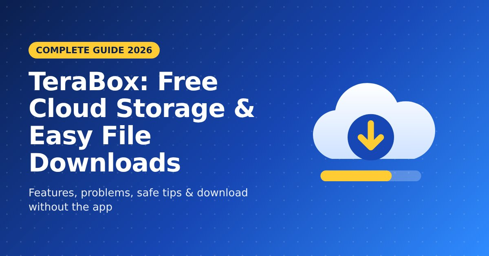
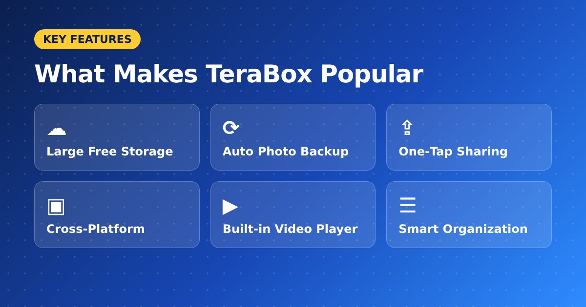
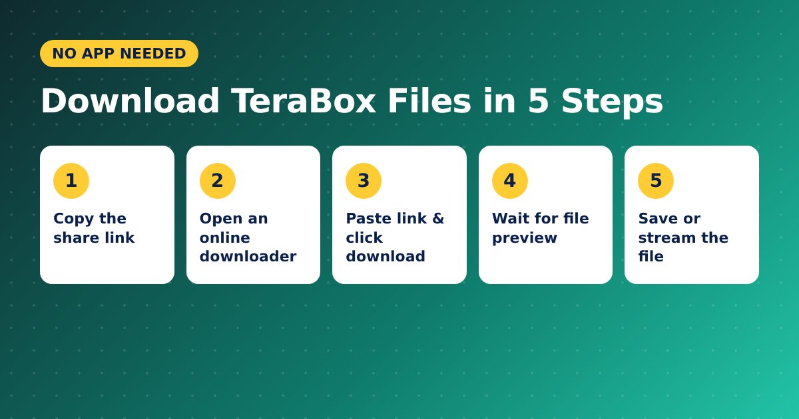

TeraBox: Complete Guide to Free Cloud Storage and Easy File Downloads

Storing and sharing large files online has never been more important, and TeraBox has quickly become one of the most talked-about cloud storage services in the world. With a huge amount of free space, easy file sharing and support for almost every device, it attracts students, creators and professionals alike. In this guide, you will learn what TeraBox is, how it works, its main benefits and limitations, and the easiest way to download shared TeraBox files in seconds.
What Is TeraBox?
TeraBox is a cloud storage platform that lets users upload, store, back up and share files online. You can save photos, videos, documents, music and compressed archives, then access them from your phone, tablet or computer. Its biggest attraction is the generous free storage plan, which gives far more space than many popular competitors offer without payment.
Users can also create share links for any file or folder. Anyone with the link can view or download the content, which makes TeraBox a popular choice for sharing study material, project files, large videos and photo collections.
Key Features of TeraBox Cloud Storage

TeraBox offers a strong set of features for both casual and heavy users:
- Large free storage: Enough space to back up thousands of photos and long videos.
- Automatic photo backup: The mobile app can save your gallery to the cloud automatically.
- Easy sharing: Create public or private links for files and folders in one tap.
- Cross-platform access: Available on Android, iOS, Windows, Mac and web browsers.
- Built-in video player: Watch uploaded videos online without downloading them first.
- File organization: Sort content into folders and search your storage quickly.
Common Problems When Downloading TeraBox Files
While uploading is simple, many people find downloading shared TeraBox files frustrating. Some of the most common complaints include:
- Forced app installation: Many share links push users to install the app before downloading.
- Mandatory sign-up: Creating an account just to get a single file wastes time.
- Slow download speeds: Free users often face throttled speeds on large files.
- Heavy advertising: Pop-ups and ads can interrupt the download process.
- Limited device storage: Installing another large app is not practical on low-storage phones.
These issues are the main reason people look for a faster, simpler way to access shared content.
How to Download TeraBox Files Without the App

The good news is that you do not need the official app to download public TeraBox links. An online TeraBox downloader converts a share link into a direct download link right in your browser. Here is how the process usually works:
- Copy the TeraBox share link of the file or folder you want.
- Open an online TeraBox downloader in any browser.
- Paste the link into the input box and click the download button.
- Wait a few seconds while the tool fetches the file name, size and preview.
- Click download to save the file, or stream the video online.
This method works on Android, iPhone, Windows and Mac, and it does not require a login or any extra software.
Benefits of Using an Online TeraBox Downloader
Using a browser-based tool instead of the app gives you several clear advantages:
- Saves time: Get your file in a few clicks instead of going through sign-up screens.
- Protects privacy: No need to share personal details or create an account.
- Saves storage: Nothing extra to install on your phone or computer.
- Works everywhere: Any modern browser is enough.
- Free to use: Most reliable downloaders do not charge anything.
Tips for Safe TeraBox Downloads
Downloading should always be quick and safe. Keep these simple tips in mind:
- Only open links shared by people or sources you trust.
- Scan ZIP, APK and EXE files with antivirus software before opening them.
- Check the file name and size before downloading to avoid fake files.
- Respect copyright and download only content you have permission to use.
- If a link stops working, ask the owner for a fresh public link, as it may be expired or deleted.
TeraBox Free vs Premium: Which One Do You Need?
The free plan is enough for most people who want to back up photos, store documents and share files occasionally. Premium plans are better suited to heavy users who need extra storage, faster speeds and an ad-free experience. If you mainly download files that others share with you, a free online downloader usually removes the need to upgrade.
Conclusion
TeraBox is a powerful cloud storage service with generous free space, simple sharing and wide device support. Its only real drawback is the slow, app-heavy download experience for shared links. Instead of installing extra apps or waiting through slow speeds, you can paste any public link into a fast, free TeraBox downloader and get your files in seconds, on any device. Bookmark it today so your next download is always just one click away.